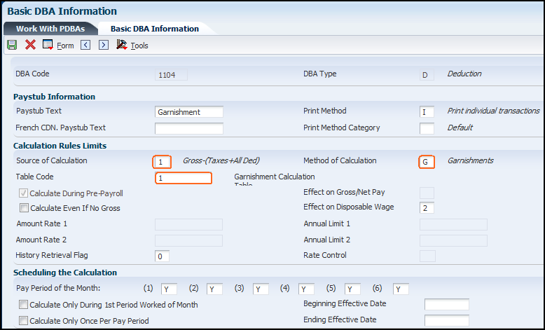
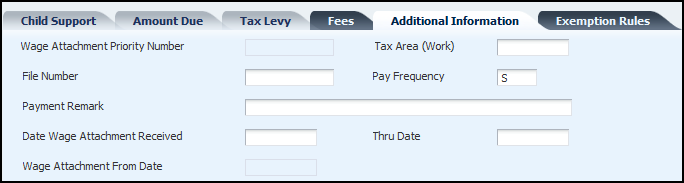
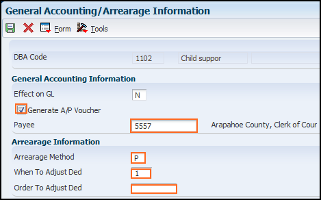
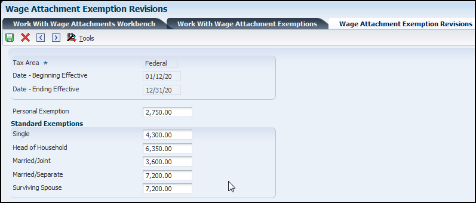
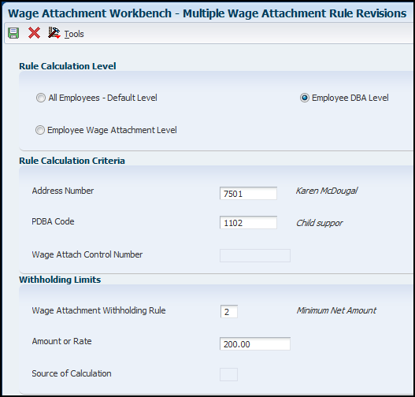

Wage attachment payments are deducted from an employee's disposable wage for payment of an outstanding debt, taxes, and/or child support. This document illustrates the deduction setup and the attachment process.
Scope
This document is intended for EnterpriseOne users who are setting up the Human Resources and Payroll modules for use by their organization.
Details
Wage Attachments Overview
Before you can enter wage attachment information for employees, you must set up a deduction for each type of wage attachment. Setting up a deduction for a wage attachment is similar to setting up any other kind of deduction. Therefore, only the unique considerations for each type of wage attachment deduction are discussed here.
Wage attachment deductions are withheld from an employee's disposable wage (disposable earnings). An employee's disposable wage is the amount that remains after all payments that are required by law have been deducted from the employee's gross wages.
These required payments include:
Federal income tax
Social Security tax
Medicare tax
State income tax
State unemployment insurance
State disability insurance
State employee retirement systems
Local and county taxes
Any other applicable state requirements
Special considerations for a wage attachment deduction include:
Consideration
Explanation
Form/Field Name
Effect on disposable wage
For a wage attachment that is required by law, you should indicate that the attachment is a mandatory deduction when you specify its effect on disposable wage.
Basic DBA Information/MV
Calculation once per pay period
Typically, you set up the system to calculate a wage attachment deduction only once per pay period. Therefore, if an employee receives a payment (such as a bonus) in addition to a regular payment, the wage attachment payment is deducted only from the regular payment. There are some exceptions to this rule. Check with your payroll professional for guidance in this area.
Basic DBA Information/DBAS
Accounts Payable integration
If the JD Edwards EnterpriseOne Payroll system is integrated with the JD Edwards EnterpriseOne Accounts Payable system, you can set up a wage attachment DBA to generate vouchers. Additional setup is required in the Accounts Payable module. See document E1: 04: How To Set Up Supplier Master & Update YTD Voucher Amount (P04012, P0100043, P04012SS, R04802, R04820A 1405239.1
General Accounting/Arrearage Information/GVCH
Declining balances
When you set up a wage attachment deduction, set the Declining Balance field to N (No). The system uses the method of calculation to calculate the declining balance.
Advanced DBA Information/DBAL
Amount due
Because wage attachment balances typically vary by employee, you should not enter an amount due for a wage attachment DBA. Instead, you enter the amount due when you assign wage attachments to individual employees.
Advanced DBA Information/AD
Negative pay situations
You can set up loan deductions to adjust or be placed in arrears in a negative-pay situation. When an employee does not earn enough in a pay period to collect the deduction, the system can place the deduction in arrears.
General Accounting/Arrearage Information/ARRR, EPRI, and DPRI
Note: After creating the deduction, the wage attachment must then be attached to the employee. This is done by adding a record for the employee using the Work With Wage Attachments Workbench (P07107) application. When accessing this application, the tabs available and the information that can be entered are controlled by the deduction you choose to use. Example: When a Tax Levy is attached to an employee, the Fee Tab is not accessible as a Tax Levy cannot have a fee assessed. In this document only the applicable information/tabs are discussed for each wage attachment type.
Fees
In some cases, you might need to associate fees with a wage attachment. For example, your organization might charge employees administrative fees for maintaining garnishments.
You set up deductions for fees, and you base these deductions on the deductions for which you are collecting the fees.
A fee deduction must have a higher DBA number than the deduction on which it is based. For example, you can base fee deduction 1120 on garnishment deduction 1104. You can base a fee deduction on only one deduction. Therefore, even when you charge the same fee for garnishments as for wage assignments, you must set up two fee deductions. Base one fee deduction on the garnishment deduction, and base the other fee deduction on the wage assignment deduction. You specify the based-on deduction number in the basis of calculation for the fee deduction. For information on Basis of Calculation see E1: 06: Overview of Adding PDBAs (Pay Types, Deductions, Benefits, and Accruals)(P059116) PDBA Setup.
When you define a wage attachment for an employee, you assign the fee deduction number to the associated wage attachment using the Work With Wage Attachments Workbench (P07107). This process will be discussed for each wage attachment type.
Setting Up Fee Deduction
From the Work with PDBAs application (P059116), select the Deduction option and click Add.
To set up a fee deduction:
On the Basic DBA Information form, enter 0 (zero) in the Source of Calculation field.
Enter $ or % in the Method of Calculation field.
Complete the steps for setting up essential DBA information. For information on essential DBA information see E1: 06: Overview of Adding PDBAs (Pay Types, Deductions, Benefits, and Accruals)(P059116) PDBA Setup.
Select Basis of Calculation. from the Form Option menu.
On the Basis of Calculation form, complete the From PDBA and Thru PDBA fields for the wage attachment deduction for which you are collecting the fee.
Click OK.
Garnishments
You set up a garnishment deduction to deduct court-ordered payments resulting from nonpayment of personal debts or overdue child support. The debts on which these imposed payments are based are already overdue. Because each deduction must match the court orders, you might need to set up separate deductions for different employees. When you set up a garnishment deduction, you can use a garnishment table to calculate the amount to withhold, or you can set up the deduction without a table, and use the wage attachment method to calculate the amount to withhold.
Setting Up Garnishment Deduction
From the Work with PDBAs application (P059116), select the Deduction option then click Add.

Source of Calculation - On the Basic DBA Information form, enter a numeric code from 1 to 7 in the Source of Calculation field.
Method of Calculation - - Enter a 'G'.
Table Code - Enter the attachment table number for your garnishment table.
Note: If you do not want to use a table to calculate the garnishment amount, enter NOTBL in this field. If you do not attach a garnishment table to the DBA, the system uses the method and amount information that you enter using the Employee Wage Attachments Review program (P07107) to calculate the garnishment.
Complete the remaining steps for setting up essential DBA information. See document E1: 06: Overview of Adding PDBAs (Pay types, Deductions, Benefits, and Accruals) (P059116) PDBA Setup.
Garnishment Calculation Tables
From the Work With Wage Attachments Workbench, select Garnishment Tables from the Form Option Menu, click Add.
Wage Attachment Table - The number you assign to the garnishment calculation table. When you set up the corresponding wage attachment deduction, enter this number in the Table Code field for the deduction. If you need to set up multiple calculation tables for a wage attachment DBA, use the same attachment table number for each of these calculation tables.
Tax Area - A code that identifies a geographical location and the tax authorities for an employee work site, including employee and employer statutory requirements. In the Vertex payroll tax calculation software, the tax area code is synonymous with GeoCode. To determine the valid codes for your location, refer to the documentation for the tax calculation software that you are using.
Pay Frequency- A user defined code (07/PF) that indicates how often an employee is paid. The system uses the value in the Description-2 field on user defined codes to calculate the amount per pay period for a salaried employee. Valid codes are:
B: Biweekly
W: Weekly
S: Semimonthly
M: Monthly
A: Annually
C: European Annualized
Date Beginning - The beginning effective date for the Garnishment Table.
Date Ending - An ending effective date for the Garnishment Table.
From - Enter the beginning range amount of disposable wage. The system uses this amount, in conjunction with the ending range amount of disposable wage, to determine the method of calculation to use.
Thru - Enter the ending range amount of disposable wage. The system uses this amount,in conjunction with the beginning range amount of disposable wage, to determine the method of calculation to use.
Amount- A value that is a percentage, a monetary amount, or an hourly rate, depending on where it is used. Valid values are:
1: For a deduction, benefit, or accrual, the meaning of this value depends on the method of calculation. The method determines whether the deduction is a flat monetary amount, a percentage, or a multiplication rate. Table method DBAs, depending on which table method they use, can either use this amount in the calculation or ignore it. If there are exceptions to the table calculation, you can override the table code in the detail area, set up a flat monetary DBA amount, or override the amount with a one-time override for a timecard.
2: For a pay type, amounts entered in this field override the hourly rate.
Method- A code that specifies the method that the system uses to calculate a garnishment withholding amount for a disposable wage range. Valid values are:
$: Flat, dollar amount.
*: Net calculation amount. If the disposable net wage is between the upper and lower range, the amount equals the difference between the disposable net wage and the lower amount.
%: Percent.
P: Percent with progressive table. To use this calculation method, a progressive table needs to be set up. For example, using a progressive table, the system could take 5 percent of the first $100.00, 10 percent of the second $100.00, and 20 percent of the remaining balance. You can use this method only with garnishments.
Method Description - will default in from method selected.
Attaching a Garnishment to an Employee
From the Work With Wage Attachments Workbench, click Add.
On the Wage Attachments Revision form the following fields are available for entry.
Employee No. - The employee number, TAX ID, or Alternate number, depending on the employee number mode that is set up in the Payroll Constants for company 00000 (P05001C)
Deduction Number - The deduction code you setup previously for the garnishment, tax levy and/or wage assignment.
Case or Loan - A number assigned to the wage attachment by the issuing agency. When you enter wage attachments, the system prevents you from entering duplicate case numbers.
Date - The date the wage attachment was issued by the agency.
Minimum Net Pay - Enter the minimum net pay amount that the court may have allowed the employee to take home.
Obligee Number - Enter the address book number of the person, company, or individual who initiated the claim and is due the money.
Amount Due- Enter the amount that is due. This amount is required for all wage attachments except a child support deduction. The amount due is one of the following amounts.
The amount due for a declining balance (Declining Balance field value is Y).
The amount due for a wage attachment deduction.
The amount due for a declining balance must be specified at one of these assignment levels:
Deductions, benefits, and accruals (DBA) setup
Group assignment
Employee assignment
Note: For wage attachment setup, the system stores the amount due in a different table and does not display it in the DBA instructions for employees. You cannot specify the amount due during time entry. When the amount due equals zero, the DBA becomes inactive.
Payee Number - Enter the address book number for the supplier who receives the final payment. For wage attachments, the payee number is the address book number of the agency,company, individual, or court that is to receive the payment of the check. This may be the same number as the Obligee Number seen above.
Original Balance - Enter the original balance due on the wage attachment. This is the total amount that must be withheld from the employee's paychecks to meet the court order requirement. For example, if the employee was served a court order for an outstanding garnishment, the system displays the total amount that is due. This is not the current outstanding balance, which is carried in the Amount Due (AD) field. The Remaining Balance on the Detail Wage Attachment Ledger is reduced by the amount of the deduction each pay period that it is deducted.
No of Periods - Enter the number of periods for which a deduction or benefit should be taken. The system automatically decreases this number by one for each period taken. For example, if the number of periods for a deduction is 12, then after one deduction is taken, the number automatically changes to 11.
Amount - Enter the amount to be withheld from the paycheck of an employee for a wage attachment. Based on the method, this amount may be used as a comparison to a percentage.
Method - Enter a value from user-defined code (UDC) table 05/GA that specifies the method that the system uses to calculate a wage attachment deduction. Values are:
Blank: The system uses information in the Standard Annual Exemption Amounts and Additional Exemption Amounts tables to calculate the garnishment.
1: The lesser of the flat amount or percent of disposable wage. (Use for child support.)
2: The greater of the flat amount or percent of disposable wage. (Use for child support.)
3: The greater of the flat amount or percent; the difference becomes the arrearage deduction if an arrearage amount exists. (Use for child support.)
4: The flat dollar amount; the difference between the new disposable wage and the minimum net pay equals the arrearage amount. (Use for child support.)
5: The flat dollar amount unless the amount is greater than percent of wage; then use the secondary amount. (Use for child support.)
6: The flat dollar amount, unless the new disposable wage is less than the minimum net pay; then adjust the amount until the minimum net is reached. (Use for garnishment and levy.)
7: The percent of disposable wage adjusted to minimum net. (Use for garnishment and levy.)
8: The lesser of the percent of gross or table amount. (Use for garnishment.)
9. The lesser of the percent of gross or debt. (Use for garnishment.)
$: The flat dollar amount. (Use for garnishment, levy, and loans.)
%: The percentage of disposable wages (Use for garnishment and levy.)
E: The wage attachment equals the exemption subtracted from source wage. (Use for garnishment.)
Note: To perform the garnishment calculation for Quebec, you must select wage attachment method E in conjunction with exemption method 4.
A/P Voucher- Enter a code that specifies whether the system generates a voucher for the DBA, tax, or wage attachment during the final update phase of the payroll processing cycle. Values are:
N: The system does not generate a voucher.
Y: The system does generate a voucher.
Source of Calculation- Enter the wage basis that the system uses to calculate the rule. This UDC code (07/DB) specifies the basis of a deduction, benefit, or accrual. When the system calculates the gross amount for disposable net wages, it does not use the basis of calculation. The gross amount includes all earnings that have a positive effect on the gross and net payment. For wage attachments, use one of these codes:
1-8: Garnishment, tax levy, wage assignment (child support and maintenance).
B: Garnishment and Child Support (Basis of Calc - Taxes)
R: Loan, interest.
0: Fees.
Wage Attachment Credit - Enter the initial claim amount associated with a wage attachment. The system reduces this amount from the calculated wage attachment. This amount reduces the wage attachment to the minimum of zero.
Fees Tab - Allows you to attach a total of two fees for each garnishment attached. The fields related to this tab shown in the screenshot above are available for each of the fees:
Company Fee - The administrative fee amount to be withheld from the employee's paycheck. Each type of wage attachment must have its own DBA setup for Fees.
Deduction No. - The deduction number to be used for withholding the administrative fee from the employees paycheck.
Note: If the correct fee deduction (one associated with this garnishment deduction) is not selected, an error will be produced.
Pay Period Limit - The maximum amount that can be withheld or accrued in a pay period for the deduction.
Monthly Limit - The maximum amount that can be withheld or accrued in a month for the deduction.
Quarterly Limit - The maximum amount that can be withheld or accrued in a calendar quarter for the deduction.
Annual Limit - The maximum amount that can be withheld or accrued in a year for the deduction.
A/P Voucher- A code used to determine whether the system should generate a voucher for the DBA, tax, or wage attachment during the final update phase of the payroll processing cycle. Valid codes are:
N: No, do not generate a voucher
Y: Yes, generate a voucher
Agency Fee - The Agency Fee amount to be withheld from the employee's paycheck. Each wage attachment must have a DBA of its own setup for fees.
Deduction No. - The deduction number to be used for withholding the administrative fee from the employees paycheck.
Limit on Pay Period Dollars - The pay period limit on dollars which can be withheld from the employees paycheck for agency fees.
Limit on Monthly Dollars - The monthly limit on dollars which can be withheld from the employees paycheck for agency fees.
Limit on Quafterly Dollars - The quarterly limit on dollars which can be withheld from the employees paycheck for agency fees.
Limit on Annual Dollars - The annual limit on dollars which can be withheld from the employees paycheck for agency fees.
Wage Attachment Witholding Rule- A code that identifies the rule that the system uses when calculating the amount of an employee's wages to withhold for a wage attachment. Valid values are:
1: Minimum % of Disposable Wage - The calculated amount of the wage attachment cannot cause the employee's net wages to be below a specified percent of their disposable wage calculation.
2: Minimum Net Amount - The calculated amount of the wage attachment cannot cause the employee's net pay to be below a specified net wage amount.
3: Maximum Wage Attachment Amounts Withheld As % of Disposable Wages - The calculated amount of the wage attachment, when combined with all other wage attachment amounts, cannot exceed the specified percentage of the employee's disposable wage calculation.
4: Maximum Wage Attachment Amounts Withheld as Dollar Amount - The calculated amount of the wage attachment, when combined with all other wage attachment amounts, cannot exceed the specified dollar amount.
Amount or Rate- A value that is a percentage, a monetary amount, or an hourly rate, depending on where it is used. Valid values are:
1: For a deduction, benefit, or accrual, the meaning of this value depends on the method of calculation. The method determines whether the deduction is a flat monetary amount, a percentage, or a multiplication rate. Table method DBAs, depending on which table method they use, can either use this amount in the calculation or ignore it. If there are exceptions to the table calculation, you can override the table code in the detail area, set up a flat monetary DBA amount, or override the amount with a one-time override for a timecard.
2: For a pay type, amounts entered in this field override the hourly rate.
Limit Order - A code which determines whether fees are included in the calculation of the employee Multiple Wage Attachment Rule. Valid values are:
Blank: Fees are not included in the calculation.
1: Fees are included in the calculation.
Source of Calculation- A user defined code (07/DB) that specifies the basis of a deduction, benefit, or accrual. When the system calculates the gross amount for disposable net wages, it does not use the basis of calculation. The gross amount includes all earnings that have a positive effect on the gross and net payment. For wage attachments use one of the following codes:
1-8: Garnishment, tax levy, wage assignment (child support and maintenance)
R: Loan, interest
0: Fees
Additional Information Tab

Wage Attachment Priority Number - A number which represents the priority in which the wage attachment is to be withheld. This priority supersedes the Deduction Priority specified when setting up the deduction.
Tax Area (Work) - A code that identifies a geographical location and the tax authorities for an employee work site, including employee and employer statutory requirements. In the Vertex payroll tax calculation software, the tax area code is synonymous with GeoCode. To determine the valid codes for your location, refer to the documentation for the tax calculation software that you are using.
File Number - A number which has been assigned to the wage attachment by the issuing agency.
Pay Frequency- A user defined code (07/PF) that indicates how often an employee is paid. Valid codes are:
B: Biweekly
W: Weekly
S: Semimonthly
M: Monthly
A: Annually
C: European Annualized
The system uses the value in the Description-2 field on user defined codes to calculate the amount per pay period for a salaried employee.
Payment Remark - A generic field that you use for a remark, description, name, or address.
Date Wage Attachment Received - The date on which the wage attachment was received from the court or administering agency.
Thru Date - The ending date of the wage attachment calculation.
Wage Attachment From Date - The beginning effective date of the wage attachment calculation
For additional information on the Exemptions Rules Tab, refer to this section within the document.
Tax Levies
Setting Up Tax Levy Deductions
You set up a tax levy deduction to deduct court-ordered payments for back taxes that the employee owes. You set up a tax levy deduction in the same way that you set up any other type of deduction.
From the Work with PDBAs application, select Deduction option then click Add.
To set up a tax levy deduction enter the following items on the Basic DBA Information form,
Enter 1,2,3, or 8 in the Source of Calculation field.
Enter L (tax levy) in the Method of Calculation field.
Enter 2 (mandatory) in the Effect on Disposable Wage field.
Complete the steps for setting up essential DBA information. See document E1: 06: Overview of Adding PDBAs (Pay types, Deductions, Benefits, and Accruals) (P059116) PDBA Setup.
Marital Status - The employee's federal marital status from the 668-W form. Marital Status will default from the employee master if it is not keyed in. This udc code from 06/WS is used in the computation of all tax levy deductions.
Tax Levy Exemptions - The number of exemptions claimed by the employee. These exemptions are not those defined on the W-4. For tax levies the employee must fill out form 668-W and define their marital status and number of exemptions.
Disability Flag - A udc code from 06/DF, which is recognized by the federal government as to whether the employee has a disability which may cause the calculation of a Tax Levy to change. Do not change these codes.
Employee Age - The age of the employee as of a certain date (for example, January 1st) for a given year. You can manually update this field or the system can update this field when you run the Update Employee Master Age report (R083495).
TheAdditional Information Tab requires the same information as discussed within the garnishment section above.
Wage Assignments
You set up a wage assignment deduction to deduct ongoing debts, including child support and maintenance, from an employee's earnings. This section provides an overview of (child support) wage assignment deduction setup. The courts typically rule that child support has priority over other types of wage attachments. This situation means that if an employee did not earn enough in a pay period to pay for all deductions, the child support deduction should be the last deduction to be adjusted.
To give the child support deduction first priority, assign it a lower DBA number than the numbers that you enter for other deductions. During payroll-cycle processing, the system adjusts (backs out) deductions in numerical order, beginning with the highest-numbered deduction. For example, deduction 1001 would be adjusted (backed out) before 1000.
Setting Up Wage Assignment (Child Support) Deductions
You set up a wage assignment deduction in the same way that you set up any other type of deduction.
Access the Basic DBA Information form (P059116)
To set up a child support deduction:
On Basic DBA Information, enter a numeric code from 1 to 8 in the Source of Calculation field.
Enter C in the Method of Calculation field.
Complete the steps for setting up essential DBA information. See document E1: 06: Overview of Adding PDBAs (Pay types, Deductions, Benefits, and Accruals) (P059116) PDBA Setu.

Additional fields on the GA/Arrearage form can be completed to define arrearage handling and AP?voucher setup.
Generate A/P Voucher - A value that designates if a voucher should be created for this deduction.
Payee - This is the supplier that will receive payment for the deduction.
Arrearage Method- A code indicating how to adjust deductions when the employee is in a negative pay situation. Valid codes are:
P: Do a partial or full deduction as needed. This is the default.
F: Do a full reduction or none at all.
N: Do not reduce.
Q: Same as code P. In addition, place the amount in arrears, but do not apply the limits when collecting the arrearage. Write the arrearage balance to history.
R: Same as code P. In addition, place the amount in arrears and apply the limits when collecting the arrearage. Write the arrearage balance to history.
G: Same as code F. In addition, place the amount in arrears, but do not apply the limits when collecting the arrearage. Write the arrearage balance to history.
H: Same as code F. In addition, place the amount in arrears and apply the limits when collecting the arrearage. Write the arrearage balance to history.
S: Same as code P. In addition, place the amount in arrears for the current pay period only but do not apply the limits when collecting the arrearage. Do not write the arrearage balance to history.
T: Same as code P. In addition, place the amount in arrears for the current pay period only and apply the limits when collecting the arrearage. Do not write arrearage balance to history.
I: Same as code F. In addition, place the amount in arrears for the current pay period only, but do not apply the limits when collecting the arrearage. Do not write arrearage balance to history.
J: Same as code F. In addition, place the amount in arrears for the current pay period only and apply the limits when collecting the arrearage. Do not write arrearage balance to history.
When to Adjust Ded- A code that specifies when the system adjusts, or backs an amount out of, deductions. Valid values are:
0: Adjust deductions marked with 0 before payroll taxes.
1: Adjust deductions marked with 0, then adjust those marked with 1 before payroll taxes.
2: Adjust payroll taxes before the deductions marked with 2. (This value is for future use.)
Order to Adjust Ded - If an employee's gross pay does not cover deductions, a code in this field tells the system in what order it should satisfy deductions. Valid codes are 0001 through 9999. The system starts with the highest code. For example, 9999 is deducted before 0001.
Attaching a Child Support Wage Assignment to an Employee
Amount 1 - The amount that the system withholds from an employee's earnings during a pay period. If an employee receives multiple payments during a pay period, the system tries to deduct the full amount from the first payment that the employee receives. If the full amount of the deduction cannot be satisfied from the first payment, the system continues to deduct from the employee's earnings in subsequent payments that are received during the pay period until the full amount has been deducted. Once the full amount has been deducted, the system will not withhold additional earnings if the employee receives additional payments during the pay period.
Method- The method the system uses to calculate a wage attachment deduction. Valid values are:
blank: The system uses information in the Standard Annual Exemption Amounts and Additional Exemption Amounts tables to calculate the levy.
1: Lesser of the flat amount or percent of disposable wage. (Use for child support).
2: Greater of the flat amount or percent of disposable wage. (Use for child support).
3: Greater of flat amount or percent, the difference becomes the arrearage deduction, if there is an arrearage amount. (Use for child support).
4: Flat dollar amount, the difference between the new disposable wage and the minimum net pay equals the arrearage amount. (Use for child support).
5: Flat dollar amount, unless the amount is greater than percent of wage, then use the secondary amount. (Use for child support).
6: Flat dollar amount, unless the new disposable wage is less than minimum net pay, then adjust amount until minimum net reached. (Use for garnishment & levy).
7: Percent of disposable wage adjusted to minium net. (Use for garnishment & levy).
8: Lesser of % of gross or table amount. (Use for garnishment).
$: Flat dollar amount. (Use for garnishment, levy & loans).
%: Percentage of disposable wages (Use for garnishment & levy).
Percent 1 - The percent of disposable wage that can used in the calculation of a wage assignment, as specified in the wage attachment setup.
Amount 2 - The amount to be withheld from the employees paycheck for a Child Support deduction. In some states the calculation of Child Support may be two tiered:
If the Method equals 5, the calculation will be: If Amount 1 is greater than Percent 1 use Amount 2.
For Methods 1, 2, 3, or 4, if the Secondary Deduction Flag equals a 1, the calculation will be: If the 'Number of Periods' equals zero(0), use Amount 2 for the calculation.
If the Secondary Deduction Flag equals a 2, the calculation will be; If the 'Number of Periods' equals zero(0), use the percent 2 in conjunction with amount 1 for the calculation.
Percent 2 - The percent of disposable wage which may be used in the calculation for a Child Support deduction. In certain states the calculation may be two tiered. If the Secondary Deduction Flag equals 2 and the Number of Periods equals zero, use percent 2 field in conjunction with amount 1 for the calculation of the deduction.
Agency Arr. Bal. - The amount of the Wage Attachment which is in arrears based upon the Court Order received. This is not the arrearage amount related to the deduction since the employee started being paid. For example:If an employee was behind in their Child Support payments when you received the Court Order, the arrearage amount would be identified on the order. This amount would be entered into this field.
Ded. Arrearage - The amount of the deduction that is being or has been reduced because the employee did not receive wages that could cover the payroll taxes and deductions calculated within the payroll cycle.
Agency Arr. Amt. - The amount of a wage attachment arrearage to be withheld from the employee's paycheck. This amount is determined by the court. The system withholds this amount in addition to the regular child support amount. If you enter an amount in this field, you must also enter a value in the Periods in Arrears field (WAWA).
Group Limit Code - A user defined code 07/GR that groups together DBAs that share common limitations. Use this field to group together wage assignments for the split of available wages. When you enter a value in Split Deduction Flag for an employee who has multiple families, you must enter a group limit code.
Family Code - A code which specifies whether the employee(Obligor) is single or supports another family. Currently the following values are valid:
S: Single, supporting oneself
M: Married, supporting another family
H: Single, supporting another family
Split Deduction Flag- Use this code to specify whether a child support deduction amount is divided equally or apportioned among all the families to whom the employee is paying child support. This condition occurs when there are multiple child support deductions for one employee, and the employee did not earn enough wages to pay all the support payments. Instead of making a payment to only one family, the amount will be allocated or divided equally to each of the wage attachment numbers. When using the multiple child support functionality the linked child supports must use the same DBA code in order to apportion amounts between the wage attachments. Also if using the Split Deduction Flag then Multiple Wage Attachment rules must not be setup for this employee/DBA otherwise the wage attachment amounts will not be apportioned successfully.
Y: Apportion the amount. If one payment was for 100 and another for 200, and the employee had only 150 available for the payments, the first family would get 50 and the second family would get 100.
1: Divide the amount equally among the families. If one payment was for 100 and another for 200, and the employee had only 150 available for the payments, each family would get 75.
N: Do not take other child support payments into consideration.
Z: Apportion based on the Original Order Amount.
To use the split deduction feature, you must use a flat dollar amount method.
Periods in Arrears - The number of periods for which the amount entered in the Agency Arrearage Amount field will be withheld from the employee's pay. You must enter a value in this field if you entered an amount in the Agency Arrearage Amount field (WAMA).
Secondary Ded Flag- A code that specifies whether the secondary amount or percent fields are to be used when the number of periods is zero. This field applies when the Method is 1, 2, 3, or 4.
N: Do not use the Amount 2 or Percent 2 field in the calculation of the Child Support Deduction
1: When Number of Periods is zero (0), use Amount 2 in conjunction with Percent 1
2: When Number of Periods is zero (0), use Percent 2 in conjunction with Amount 1
If you enter 2 in Secondary Deduction Flag and 1 or 2 in the Method field, the system uses the Percent 2 field and the Amount 1 field to calculate the deduction amount after the value in the Number of Periods field equals 0.
FIPS Code - The Federal Information Process Standard (FIPS) code of the SDU receiving the transaction.
Voucher Payment Type- A code that specifies the type of payment remitted for child support vouchers. Valid values are:
0: Check payment
1: EFT payment
Medical Insurance Coverage Available- A code that identifies whether or not the employer offers family medical insurance coverage. Valid values are:
Blank: Undefined
0: No
1: Yes
Amount Due Tab
Child Support - not needed for child support setup.
Answer Fee - The amount of answer fees included in the Wage Attachment.
Penalty - The amount of penalty included in the Wage Attachment.
Interest - The amount of interest included in the Wage Attachment.
Mailing Fee - The amount of certified mailing fees included in the Wage Attachment.
Company Fine - The amount that your company can be fined if compliance does not occur.
Lawyer Fee - The amount of attorney fees included in the Wage Attachment.
Other Costs - The amount of other costs included in the Wage Attachment.
Service Fee - The amount of service fees included in the Wage Attachment.
Total Deductions - not needed for child support setup.
Use the Exemption Rules tab on the Wage Attachment Revisions form to capture all rules (specified by the government) that determine exemption amounts for child support and garnishment wage attachments. These rules are used in conjunction with all existing functionality for wage attachments. You can set up these rules as a flat amount, a percentage, or a table method. When you use a table method, calculation tables store the upper limit, lower limit, and exemption rate for the individual garnishment or child support order. The exemption rules are stored in the Wage Attachment Exemption Rule table (F071074). The system enables you to calculate exemption amounts:
Based on a flat dollar amount.
Based on a percentage of gross or net wages.
Based on a range of gross or net wages.
Based on a flat dollar amount in combination with a range of gross or net wages.
Within multiple wage ranges.
The JD Edwards EnterpriseOne software enables you to calculate wage attachment after subtracting the exemption amount from the wage.
Prerequisite: Set up exemption tables.
Setting up Exemption Tables
From the Work With Wage Attachments Workbench, select Standard Exemptions option from the Row Menu, click Add.
On the Work With Wage Attachment Exemptions, add the following information that was provided on the garnishment or levy that was served to your organization for a current employee. These amounts have to be changed only when the table is changed by the serving agency.

Tax Area - A code that identifies a geographical location and the tax authorities for an employee work site, including employee and employer statutory requirements. In the Vertex payroll tax calculation software, the tax area code is synonymous with GeoCode. To determine the valid codes for your location, refer to the documentation for the tax calculation software that you are using.
Date Beginning Effective - The beginning effective date for the table.
Date Ending Effective - The ending effective date for this table.
Personal Exemption - The Standard Personal Exemption Amount for the calculation of Tax Levy exempt dollars for an individual. Currently this exemption amount is the same as the exemption amount for the calculation of Federal Income Tax.
Single - The standard annual wage amount exempt from levies, if the employee's filing status is Single.
Head of Household - The standard annual wage amount exempt from levies, if the employee's filing status is Head of Household.
Married Joint - The standard annual wage amount exempt from levies, if the employee's filing status is Married Joint.
Married/Separate - The standard annual wage amount exempt from levies, if the employee's filing status is Married Separate.
Surviving Spouse - The standard annual wage amount exempt from levies, if the employee's filing status is Surving Spouse.
Note: The values in this table can change annually, so review of the values in this table type when a new levy is served is a good business process.
Attaching Exemption Rules to an Employee
From the Access the Wage Attachment Revisions form. Select the Exemption Rules tab.
Exemption Rule- Enter a value from the UDC table 07/XR to specify the exemption rule for calculating garnishment. Values are:
Blank: Apply exemption after calculation. When you leave this field blank, the system calculates additional exemption on the wage and then applies the exemption amount.
1: Apply exemption before calculation. When you enter 1 in this field, the system applies the exemption amount to the gross wage and then calculates the additional exemption amount.
Exemption Method- Enter a value from UDC table 07/XM that specifies the method to calculate an exemption amount for a child support or garnishment wage attachment. Values are:
1: Flat dollar amount.
2: Percent of gross or net wages.
3: Use an exemption table from which the exemption amount is retrieved. If you use exemption method 3 and enter an amount in the Exemption Amount field, the amount is defined as a flat dollar value and is added to the exemption amount that the system retrieves from the table.
4: Use an exemption table to retrieve the additional exemption amount after subtracting the exemption amount from the gross wage. If you use exemption method 4 and enter an amount in the Exemption Amount field, the system first subtracts that amount from the gross wage, then calculates the exemption amount from the table, and then adds the exemption amount to the calculated exemption amount. This amount is the actual exemption amount. The following example illustrates this calculation:
Gross Wage
Exemption Amount
Additional Exemption from the table
$2000.00
$520.00
70%
In this case, the system calculates the additional exemption on the amount derived by subtracting the exemption amount from the gross wage. The amount would be ($2000 - $520) = $1480. Then the system calculates the additional exemption amount by this formula: (70% * $1480) = $1036.
The system derives the total exemption by this formula: Exemption amount + Additional exemption amount ($520 + $1036) = $1556 The garnishment amount in this case would be $2000 - $1556, which is $444.
Note: To perform the garnishment calculation for Quebec, you must select exemption method 4 in conjunction with the wage attachment method E.
Exemption Amount - Enter the amount that the system uses to calculate child support or garnishment wage attachment. This can either be an amount or a percent, depending on the exemption method.
Minimum Exemption - Enter the minimum amount of pay that is exempt from the garnishment or child support wage attachment, even when the exemption calculates to a lower amount.
Note: You cannot use minimum exemption with exemption method 1. If you enter an amount in this field, the system applies this rule after calculating the exemption.
Table Code - Designate the table code to be accessed in the F069026 table.
Note: You can use a table code only with exemption methods 3 and 4. This field must be numeric.
Maximum Exemption - Enter the maximum amount of pay that is exempt from the garnishment or child support wage attachment, even when the exemption calculates to a higher amount. For example, an employee has a maximum exemption amount of 200$. If the employee's exemption calculates to a higher amount than 200$, the employee would still have 200$ exempt from the child support or garnishment wage attachment.
Wage Attachment Ledger
Use the Wage Attachment Ledger to reviewthe deduction history of a wage attachment.
Wage Attachment Arrearage Information
The only Wage Attachment that will arrear by design are loan wage attachments. All other wage attachments including Child Support will only utilize arrearage amounts (ARRA) input to the child support as part of the original court order, and will not add to the arrearage amount in F07107 (Employee Wage Attachment Rules) during the process of running payroll. This is because in EnterpriseOne child support and other wage attachment instructions are a per pay period calculation - if an employee's wages do not cover the attachment in full then the child support will only be taken once as specified by the court order and will not 'catch up' in the next period.
Multiple Wage Attachment Rules
Many federal and state governments regulate the amount of an employee's earnings that can be used to satisfy wage attachments. On occasion, employees within the organization might have more than one wage attachment. Although you can set up withholding limits on each wage attachment individually, you might need to create a rule that considers all of the employee's wage attachments when determining how much of an employee's earnings can be used to satisfy the attachments.
During pay cycle processing, the Process Multiple Wage Attachment Rules function (B0701800) tests for wage attachment rules each time a wage attachment is calculated to determine whether any rules have been broken. Occasionally, a reduction in the amount of an employee's wage attachment withholdings is necessary to comply with the wage attachment rules. When a reduction is necessary, the system adjusts the amount of the wage attachment withholdings to comply with the rule. Depending upon the employees or the wage attachments that are effected by the rule, you can set the rule up at the DBA level, the employee DBA level, or the wage attachment level. When you add a rule, you must specify how the system determines the employee's eligible wage basis for calculating wage attachments, along with the calculation limits and methods. Wage attachment rules are stored in the F071073 table.
When you set up wage attachment rules, you must consider this information:
Disposable wage calculation types
Wage attachment withholding rules
Assignment level
Priority
From the Work With Wage Attachments Workbench, select the Multiple Wage Attachments Rules from the Form Option Menu, click Add on the Work With Multiple Wage Attachment Rules form.

Complete the fields defined below:
Rule Calculation Level- An option that is used to specify which wage attachments will be assigned a withholding rule. These rules limit the amount withheld from an employee's wages when multiple wage attachments are present. Depending upon the option that you choose, you must complete additional fields to calculate wage attachments correctly. The required fields for each option are listed below. Valid values are:
All Employees - Default Level - This option requires that PDBA Code only be populated. The system calculates the wage attachment rule for all employees that have a wage attachment with the specified PDBA code.
Employee DBA Level - This option requires that Address Number and PDBA Code be populated. The system calculates the wage attachment rule for wage attachments with the specified PDBA code for the specified employee.
Employee Wage Attachment Level - This option requires that Address Number, PDBA Code and Wage Attachment Number be populated. The system calculates the wage attachment rule only for the specific wage attachment number for the specified employee.
Address Number - A number that identifies an entry in the Address Book system, such as employee, applicant, participant, customer, supplier, tenant, or location. In this case, it is the employee's address book number,
PDBA Code - A code that defines the deduction used for this wage attachment.
Wage Attach Control Number - A control number used to group and identify all related elements associated with a Wage Attachment (Garnishment, Levy, Child Support or Loan). This number is assigned by the system and is used to attach a specific deduction to its related Wage Attachment information.
Wage Attachment Withholding Rule- A code that identifies the rule that the system uses when calculating the amount of an employee's wages to withhold for a wage attachment. Valid values are:
1: Minimum % of Disposable Wage - The calculated amount of the wage attachment cannot cause the employee's net wages to be below a specified percent of their disposable wage calculation.
2: Minimum Net Amount - The calculated amount of the wage attachment cannot cause the employee's net pay to be below a specified net wage amount.
3: Maximum Wage Attachment Amounts Withheld As % of Disposable Wages - The calculated amount of the wage attachment, when combined with all other wage attachment amounts, cannot exceed the specified percentage of the employee's disposable wage calculation.
4: Maximum Wage Attachment Amounts Withheld as Dollar Amount - The calculated amount of the wage attachment, when combined with all other wage attachment amounts, cannot exceed the specified dollar amount.
Amount or Rate - For a deduction, such as this, the value depends on the method of calculation. The method determines whether the deduction is a flat monetary amount, a percentage, or a multiplication rate. Table method DBAs, depending on which table method they use, can either use this amount in the calculation or ignore it. If there are exceptions to the table calculation, you can override the table code in the detail area, set up a flat monetary DBA amount, or override the amount with a one-time override for a timecard.
Source of Calculation- A user defined code (07/DB) that specifies the basis of a deduction, benefit, or accrual. When the system calculates the gross amount for disposable net wages, it does not use the basis of calculation. The gross amount includes all earnings that have a positive effect on the gross and net payment. For wage attachments use one of the following codes:
1-8 - Garnishment, tax levy, wage assignment (child support and maintenance)
R - Loan, interest
0 - Fees
Additional Information
Many states have state specific guidelines for handling wage attachments. Please consult your payroll professional for guidance in this area. Listed below is some additional information concerning setup for some of these special situations: